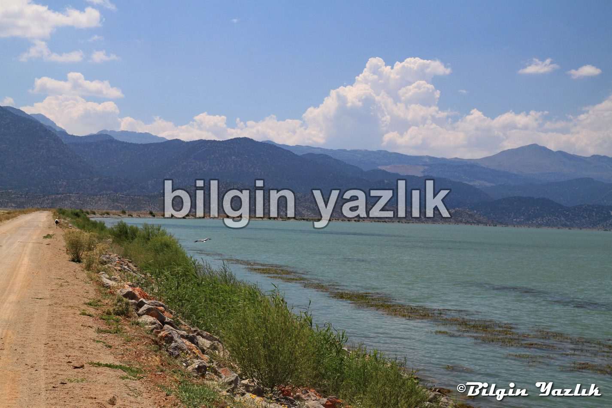
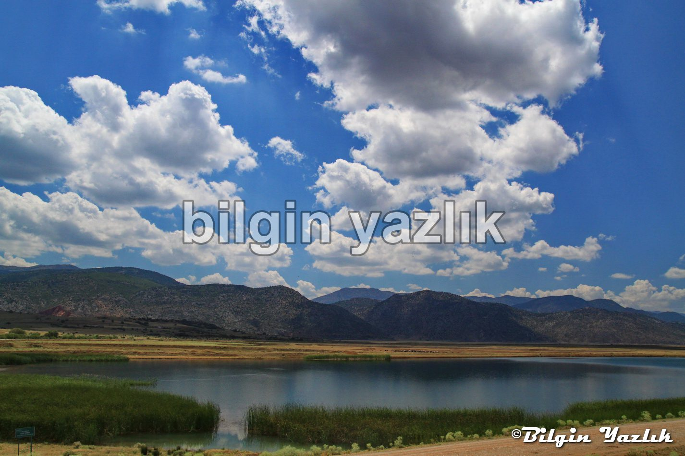

İç Anadolu · 29 Ekim 2014
Suğla Gölü
Konya’nın Seydişehir ilçesi ile Bozkır ilçesi sınırları arasında yer alır.
Seydişehir’den Bozkıra giden yoldan Yalıhüyük köyü içerisinde göle ulaşabilirsiniz.
Sulak bir alan ve çok sayıda kuş türünü barındırıyor.
Göle ulaşmak hayli zor çünkü ne bir tabela var ne de bir yol, ancak sulama kanalı boyunca stabilize yoldan gidilebiliyor.
Göl suyu kanallar ile sulama amacı ile taşınıyor ve çok ciddi manada tarım yapılıyor.
Günümüzde gölün adı DSİ tarafından sulama deposu olarak değiştirilmiş, kimi zaman tamamen susuz bile kalabiliyormuş.
Gölde ben çok sayıda kuş gözlemledim, balıkçılık da yapıldığı anlatılıyor.
Koordinatlar:
Yalıhüyük
Konya, Türkiye
37.301799, 32.046817


Bu yazı taliyol arşivinden taşınmıştır. · özgün kayıt